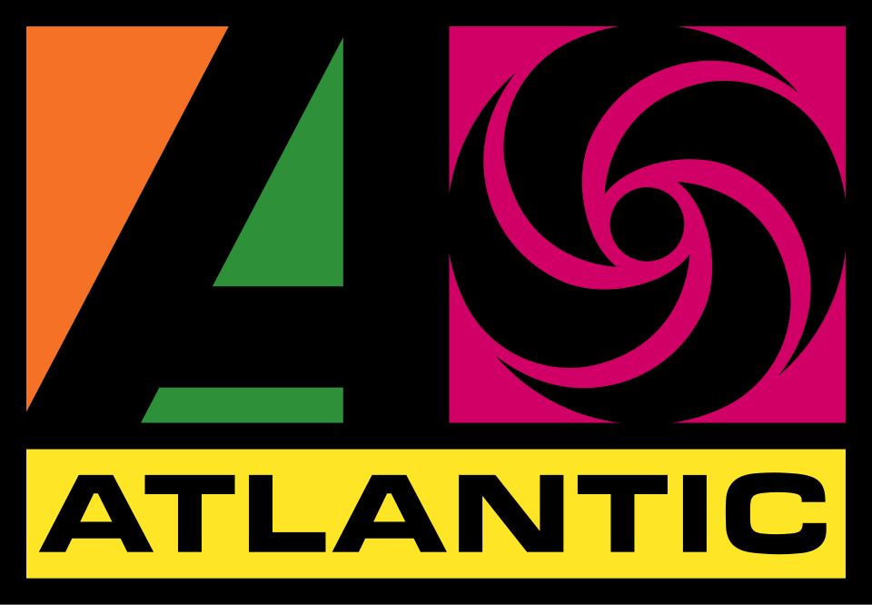

홈 > 브랜드 매거진 > 애틀랜틱 레코드
애틀랜틱 레코드
애틀랜틱 레코드(Atlantic Records)는 1947년 뉴욕에서 설립돼 현재 워너 뮤직 그룹 산하에 있는 미국의 음반 레이블이다.
산업 분야 미디어·엔터테인먼트 · 공개 등급 디렉토리 · 브랜드 평가 3.2 ★

한눈에 보는 브랜드
애틀랜틱 레코드(Atlantic Records)는 1947년 아흐메트 에르테군과 허브 에이브럼슨이 뉴욕에서 설립해 초기 재즈·R&B·소울로 명성을 쌓았다. 1967년 워너에 인수된 뒤 록·팝으로 확장했고 현재 워너 뮤직 그룹의 핵심 레이블이다.
브랜드 관점
제품·서비스 범위, 유통 방식, 시각 아이덴티티, 시장 포지션을 함께 비교하면 같은 산업의 다른 브랜드와 차이가 선명해집니다.
시작과 성장
애틀랜틱 레코드는 1947년 미국 뉴욕에서 아메트 어테건과 허브 에이브럼슨이 함께 설립한 음반사다. 두 사람은 가스펠과 재즈, 리듬앤블루스를 전문으로 다루는 독립 레이블을 표방하며 출발했고, 1949년 스틱 맥기의 곡으로 첫 히트를 기록하면서 사업의 기반을 다졌다.
1950년대에는 조지아 출신의 시각장애 가수 겸 피아니스트 레이 찰스를 영입해 이후 소울 음악의 토대가 된 사운드를 만들어냈고, 루스 브라운과 오티스 레딩 같은 가수들을 통해 리듬앤블루스와 소울 분야에서 미국을 대표하는 위치로 올라섰다. 1966년에는 컬럼비아를 떠난 아레사 프랭클린이 합류해 연달아 히트곡을 내며 소울의 여왕으로 자리매김했다.
1967년 애틀랜틱은 천칠백오십만 달러에 워너브라더스-세븐아츠에 매각되어 오늘날 워너뮤직그룹의 산하 레이블이 되었으며, 이를 계기로 록과 팝으로 영역을 넓혀 크로스비, 스틸스, 내시 앤 영과 레드 제플린, 예스 등을 선보였다. 재즈와 리듬앤블루스에서 출발해 록과 대중음악 전반으로 확장해 온 과정이 애틀랜틱의 역사를 이룬다.
브랜드 아이덴티티
R&B·소울의 황금기를 이끈 뒤 록·팝으로 확장한 워너 뮤직 그룹 대표 레이블이다.
제품과 서비스
애틀랜틱 레코드의 제품과 서비스는 미디어·엔터테인먼트 범주에서 해석됩니다.
현재 상태
타임라인
정리된 연도형 이벤트가 없습니다.
BI/CI 변천사
함께 읽을 브랜드
BT
블랙 탑 레코드
미디어·엔터테인먼트 · 디렉토리블랙 탑 레코드블랙 탑 레코드는 미국의 미디어·엔터테인먼트 브랜드로, 콘텐츠 포맷, 팬덤, 채널 운영, 지식재산권 확장이 함께 작동하는 영역입니다.
Am
American Record Company
미디어·엔터테인먼트 · 디렉토리American Record CompanyAmerican Record Company는 미국의 미디어·엔터테인먼트 브랜드로, 콘텐츠 포맷, 팬덤, 채널 운영, 지식재산권 확장이 함께 작동하는 영역입니다.
Tr
Trix Records
미디어·엔터테인먼트 · 디렉토리Trix Records트릭스 레코드(Trix Records)는 1972년 피트 라우리가 미국에서 설립한 전통 블루스 레이블이다. 피드몬트 블루스 등 전통 블루스·포크의 필드 레코딩을 남긴...
 미디어·엔터테인먼트 · 디렉토리워너 뮤직 그룹
미디어·엔터테인먼트 · 디렉토리워너 뮤직 그룹워너 뮤직 그룹(Warner Music Group)은 1958년 미국에서 설립된 세계 3대 메이저 음반 기업 중 하나인 독립 음악 그룹이다.
24
2419 Record Label
미디어·엔터테인먼트 · 디렉토리2419 Record Label2419 Record Label는 네덜란드의 미디어·엔터테인먼트 브랜드로, 콘텐츠 포맷, 팬덤, 채널 운영, 지식재산권 확장이 함께 작동하는 영역입니다.
 미디어·엔터테인먼트 · 디렉토리5 Minute Walk
미디어·엔터테인먼트 · 디렉토리5 Minute Walk5 Minute Walk는 미국의 미디어·엔터테인먼트 브랜드로, 콘텐츠 포맷, 팬덤, 채널 운영, 지식재산권 확장이 함께 작동하는 영역입니다.
75
75 Ark
미디어·엔터테인먼트 · 디렉토리75 Ark75 Ark는 미국의 미디어·엔터테인먼트 브랜드로, 콘텐츠 포맷, 팬덤, 채널 운영, 지식재산권 확장이 함께 작동하는 영역입니다.
Bl
Blue Goose Records
미디어·엔터테인먼트 · 디렉토리Blue Goose RecordsBlue Goose Records는 미국의 미디어·엔터테인먼트 브랜드로, 콘텐츠 포맷, 팬덤, 채널 운영, 지식재산권 확장이 함께 작동하는 영역입니다.